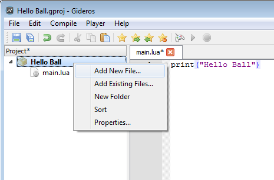
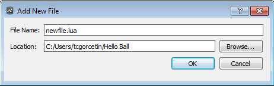
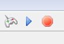
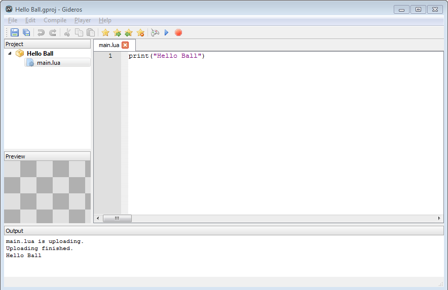
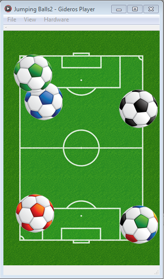
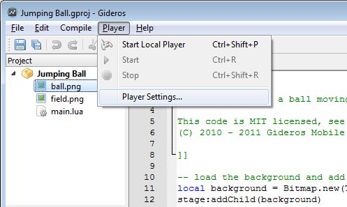

Getting Started
Video Tutorial
Creating a New Project
First open Gideros Studio. Then create a new project from “File→New Project” menu. Name your project “HelloBall”:

Here is our development environment where you create/manage assets and run your code:

Your First Code
Right click the project name at Library and select “Add New File…” to add your first Lua code:

Name your file “main.lua” and click OK.

Now double-click main.lua and write
print("Hello Ball")

Running in Gideros Player
At the first part of this tutorial, we just want to run our code in “Gideos Player” and print “Hello Ball” to the console.
Now select “Player→Start Local Player” to start Gideros Player.

After “Gideros Player” opens, the start and stop icons become enabled.

This means “Gideros Studio” connects to “Gideros Player” and ready to upload your code and assets and then run the project. Press start button (or select “Player→Start” from main menu) to run the project:

Now you see the output of your project at the “Output” panel.
Adding Assets
Now let’s add some images to our asset library. Download field.png and ball.png and copy these images to your project directory. Then, right click the project name at Library and select “Add Existing Files…” to add your image files to the project.
{kind=link}
{kind=link}

More Code
And then write the code below:
local background = Bitmap.new(Texture.new("field.png"))
stage:addChild(background)
local ball = Bitmap.new(Texture.new("ball.png"))
ball.xdirection = 1
ball.ydirection = 1
ball.xspeed = 2.5
ball.yspeed = 4.3
stage:addChild(ball)
function onEnterFrame(event)
local x = ball:getX()
local y = ball:getY()
x = x + (ball.xspeed * ball.xdirection)
y = y + (ball.yspeed * ball.ydirection)
if x < 0 then
ball.xdirection = 1
end
if x > 320 - ball:getWidth() then
ball.xdirection = -1
end
if y < 0 then
ball.ydirection = 1
end
if y > 480 - ball:getHeight() then
ball.ydirection = -1
end
ball:setX(x)
ball:setY(y)
end
stage:addEventListener(Event.ENTER_FRAME, onEnterFrame)

After pressing start, you’ll have a nice ball moving around and bouncing from the edges:

Running on Device Player
IOS device
To run project on IOS device you need to build and install the GiderosiOSPlayer XCode project (GiderosiOSPlayer.zip) comes with the installation. You need to be an approved Apple Developer for iOS and need to install the XCode with iOS SDK.
Android device
To run project on Android device you need to install the GiderosAndroidPlayer.apk (comes with the installation) on your device.
Windows Phone device
To install the Windows Phone player on a Windows Phone you must first unlock you Windows Phone. Run the program "Windows Phone Developer Registration (8.1)". It comes with Visual Studio (Windows Phone SDK 8.1 folder), connect your Windows Phone using a USB cable and click Register. After that you can unzip WindowsPhone player and deploy it using Windows Phone Application Deployment and selecting giderosgame.WindowsPhone_yy.mm.dd.0_arm.appxbundle.
Windows RT (Metro style) device
Due to Microsoft limitations, you can't run Windows Store app player on the same device as your Gideros Studio are. Gideros Studio just won't connect, due to sandboxing nature of Windows Store apps. You need to run Windows app player on another device (like another tablet or computer)
Run project
After installing GiderosPlayer to your device, open the player and enter the IP of your device (which will be shown in Gideros Player) from the menu “Player→Player Settings”.

When the Start and Stop buttons appear enabled, press Start to run your code on device.